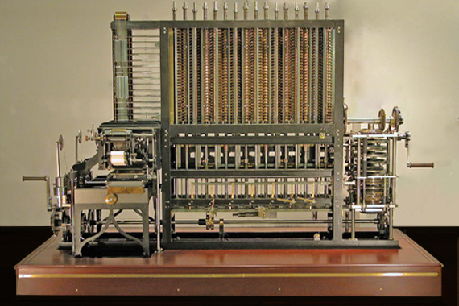
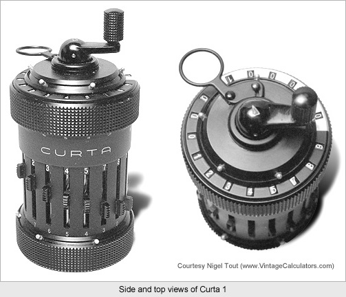

A short history lesson¶
Read time: 29 minutes (7443 words)
Computers were invented to help us do math quickly!
But how do they do this?
To understand how they work, we need a bit of a history lesson
Counting things¶
How do we keep track of things - like sheep for instance?
If we only have a few - use your fingers
If you have more sheep than fingers, try sticks
What if you have more sheep than sticks?
Using symbols to represent numbers¶
Using symbols for numbers dates back to ancient Buddhists, and ended up with the ten symbols we use today.
Why ten? We might have had 20 if someone hadn’t invented shoes, leaving us with only ten fingers to count on! We might have decided on 12, but counting on your feet involves too much bending over, so that idea did not take hold!
Note
Surprisingly, it took a long time to get people to accept the symbol zero! The ancient Greeks, who seemed to ponder just about everything, could not handle the idea of “something representing nothing”, so they did not use any symbol for zero! See Wikipedia “0”
Building mechanical counting machines¶
Leonardo da Vinci made a sketch of a geared machine that would be used as a counting machine
Here is an attempt to construct a machine based on this drawing:
Years later Blaise Pascal constructed a mechanical calculator to help his father add up taxes
These machines were complicated and inaccurate because making gears was hard!
But we got better, and more sophisticated machines got built.
This is the Babbage “Analytical Engine” built in the 1800’s - one of the first machines that was “programmable”! It never quite worked because building complicated machines back then was just too durn hard to do!
Here is one of mine from from the 1960s:
Mechanical calculators all worked with Decimal Numbers meaning numbers that use the ten digits we are familiar with. They got pretty good at building these machines! Even adding motors to spin the gears!
We need more speed, Captain!
But we need to manipulate numbers faster! So we switched from mechanical systems to electronic systems in the 1940s
Early Computers¶
In the 1940s we used Vacuum tubes, switches, and relays to build electronic gadgets - so the first computers were built out of these.
If we have no gears, how do we represent our familiar ten digits?
Early attempts used a Ring Counter which is like a ring of ten lights that turn on one at a time around the ring (sounds like a gear - eh!)
When the count reached the end, a carry signal was sent to another ring causing that ring to count by one. All of this seems just an electronic version of a mechanical calculator!
Eniaci_ had a lot of tubes!

And boy-did it get hot and use electricity!
Eventually, engineers noticed that the tubes were just being used a electronic switches, and could be replaced by the transistor
This one was not that small, but things got smaller and transistors ended up replacing all the tubes - making computers smaller
Counting Techniques¶
Can we count some other way?
Number Systems¶
We use a specific set of We count by adding one to some number to get the next number. We represent that next number using the next symbol in our set of digits. If we run out of symbols, we start over with zero, and carry one into the next column.
- 0 + 1 = 1
- 1 + 1 = 2
- …
- 9 + 1 = 10
What is we only had eight fingers instead of ten?
We probably would not have invented the digits 8 and 9 (why?)
Now we would count like this:
- 0 + 1 = 1
- 1 + 1 = 2
- …
- 7 + 1 = 10
That does not look right to us - but it would to those eight fingered folks!
What do the digits mean¶
Numbers are expressed as a series of digits, as many as we need.
We name each column something like 1’s 10’s 100’s, etc
That is for our ten fingered folks!
We call the number of symbols in our number system the t:term:base of that system
Our base is 10, the eight fingered folks base is 8 (only eight symbols)
So for them, the columns are the 1’s, 8’s, 64’s, etc. Except, they would not have called them this, since those numbers are base 10! Yikes, they would have said 10, but to us they would mean 8. Boy, all of that would have been confusing!
Hmmm, each column is really the base raised to some power
(remember that any number raised to the zero power is one!)
- 10 ^ 0 = 1
- 10 ^ 1 = 10
- 10 ^ 2 = 100
- etc
And for our eight fingered folks:
- 8 ^ 0 = 1
- 8 ^ 1 = 8
- 8 ^ 2 = 64
- etc
- 1 * (8 ^ 1 ) + 0 * (8 ^ 0)
So 10 in base 8 (to our 8 fingered folks) is the same as 8 to us!
We can use the symbol 8, but they do not have this symbol, so they use 10!
Phew!
What if we only had two fingers?¶
Boy, it would be hard to hold a pencil!
If we only have two fingers, we probably would only have two digits - how about 0 and 1!
Counting in this system goes like this:
- 0 + 1 = 1
- 1 + 1 = 10
- 10 + 1 = 11
- 11 + 1 = 100
- 100 + 1 = 101
- etc
Remember that each time we run out of digits, we start over and carry one into the next column.
Switches are good at 0 and 1¶
We can use a switch to represent a 0 or a 1 very easily.
- If it is open we say it represents a 0
- If it is closed, we say it represents a 1
Transistor switches are better
Transistors are smaller, and have no moving parts!
A transistor is like a water pipe with a valve in the middle.
Here is the symbol engineers use for a transistor:
If we hook a battery across the A and B leads on the transistor, the light will not light - the transistor switch is off.
Think of electricity as a kind of water flowing through the pipes (wires).
If we hook up lead C to the battery, the transistor turns on and the light lights up! The transistor switch is on.
Hmmm, if we hook up C to the battery the light goes on, if we disconnect it the light goes off! The light shows us the value of the signal on the line C.
This is kind of neat, we can see the signal using the light!
If C is hooked to the battery, let’s say it’s value is 1. If C is disconnected, let’s say it’s value is 0
Now we can see the result as a light that is on (1) or off(0).
Using more transistors¶
Now we can think about what is going on by saying we set the value of the input C to 1 and can see the output value by looking at the light.
How about this circuit? What will be the value of the output for the possible inputs?

In this circuit the light only goes on if both inputs are 1, other wise it stays off
This is called a logical system. We get a 1 (light on) only if B and C are both 1
With systems like this we can build a computer that can do logical operations in addition to math!
Modern computers use binary numbers and transistors¶
And boy, do they pack a bunch of transistors in a small package:

There are over 10 million transistors in this small computer chip!
Modern computers actually have several (would you believe possibly thousands) of these processing elements in them. A big supercomputer can process so much information so fast it is just astounding what we can do with them! Much of the science we take for granted today is only possible thanks to these huge number crunchers!
Computers are Everywhere¶
Sometimes we lose sight of how much we depend on computers in our daily lives. You probably woke up this morning thanks to a computer keeping time in your digital clock. Maybe you fired up the microwave to heat a cup of water. The buttons you punched were sending signals to a computer. Got in your car? There are upwards of 20-30 computers in a modern car doing all kinds of fairly simple things. Notice those traffic lights? Sensors in the street sent signals to computers that figured out that you needed to sit still and fume for a few minutes.
The list goes on and on. Almost every major aspect of our lives seems to depend on computers at some level, so It is important to learn as much as we can about these beasts. Not to be some kind of geek! But, to become better able to use these things to help us do whatever is really important to us - be that your profession, or just playing a game.
Have fun with them - they are not really that scary.

{kind=link}
{kind=link}
{kind=link}
{kind=link}
{kind=link}